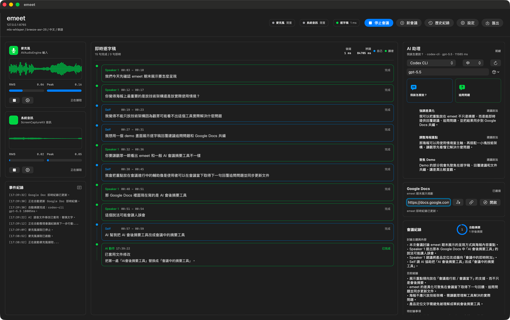
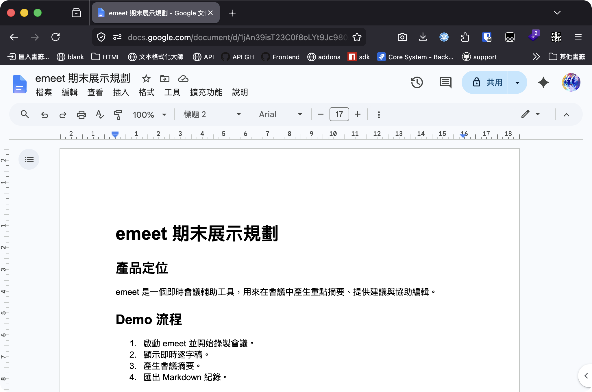

讀取共同文件內容，讓追問、回覆與筆記不只依賴零散逐字稿。
Google Docs Referencing · Local-first · Meeting Copilot
emeet
Google Docs 即時參照的會議 Copilot
macOS 原生工具在會議中擷取麥克風與系統音訊，生成逐字稿，讓正在討論的 Google Docs 成為 AI 可參照的共同脈絡；再以此支援追問、保守回覆、notes/actions 與可控文件更新。
用 What should I say? 與 Follow-up questions 推進下一步討論。
把會議重點與 action items 同步寫回 Google Docs 的 live notes 區塊。
macOS 音訊擷取搭配本機 STT、Ollama 或 OpenAI-compatible endpoint。
Product Interface
正在會議中：Google Docs 參照、逐字稿與 follow-up support 同時發生


Motivation
會議常卡在共同文件脈絡
多數 AI notetaker 解決的是會後整理；但很多會議其實圍繞 Google Docs、需求文件或企劃書進行。關鍵壓力不是會後才忘記，而是會中就需要立刻參照文件、理解對話、追問限制，並讓共同文件同步更新。
emeet 的定位不是「另一個摘要工具」，而是先把正在討論的 Google Docs 變成 AI grounding，再提供 follow-up support。
- 參照：讀取 Google Docs 脈絡，讓 AI 知道大家正在討論哪份文件。
- 跟進：從逐字稿與文件脈絡產生追問、回覆與下一步。
- 本地：音訊在 macOS 端擷取，模型與供應商可依隱私、速度與成本切換。
Core Claim
AI 會議輔助的價值，不只在會後替你回憶，而是在當下參照共同文件並協助推進下一步。
Design Considerations
低干擾、可控制、能落地
- D1 · Shared docs become grounding
- Google Docs 不是匯出目的地，而是會議中追問、回覆與筆記的共同脈絡來源。
- D2 · Local-first by architecture
- 麥克風與系統音訊先在本機分流；STT/LLM provider 抽象化，保留本機與私有端點選項。
- D3 · Follow-up belongs to the current turn
- 追問與回覆要貼近最新幾句對話與文件脈絡，不能等 30 秒摘要週期才出現。
- D4 · Prompts should be conservative
- AI 只使用提供的 transcript 與 Google Docs context，不猜日期、owner、預算或未確認承諾。
- D5 · Edits must be bounded
- 文件修改只在明確語音指令下執行，限定可定位段落與單一步驟操作，避免失控改文。
Design Outcome
使用者不用離開會議節奏，就能參照共同文件、取得追問方向，並留下可保存的會議紀錄。
Approach / System Architecture
高頻音訊管線 + Google Docs 脈絡管線
Mic
AVAudioEngine
AVAudioEngine
System
ScreenCaptureKit
ScreenCaptureKit
PCM16
16 kHz mono
16 kHz mono
WebSocket
100 ms frames
100 ms frames
FastAPI
segmenter
segmenter
STT
mlx / faster-whisper
mlx / faster-whisper
Assistant
provider layer
provider layer
JSON
drafts / notes / actions
drafts / notes / actions
Google Docs
context + live notes
context + live notes
Chrome
open / scroll / find
open / scroll / find
SQLite
records + export
records + export
macOS app 負責擷取音訊、顯示逐字稿與管理 Google Docs 連線；backend 負責 speech-window segmentation、STT、Google Docs snapshot、LLM provider dispatch 與 SQLite 儲存。Assistant request 同時帶入 final transcript 與文件 snippets，前端只接收 drafts / notes / actions 等結構化輸出。
Audio100 ms
本機擷取後小封包送出
STTspeech window
停頓後產生 final transcript
Docssnapshot
讀取共同文件作為 grounding
Supporton demand
追問與回覆由按鈕觸發
Notes30 sec
用 transcript + docs context 更新